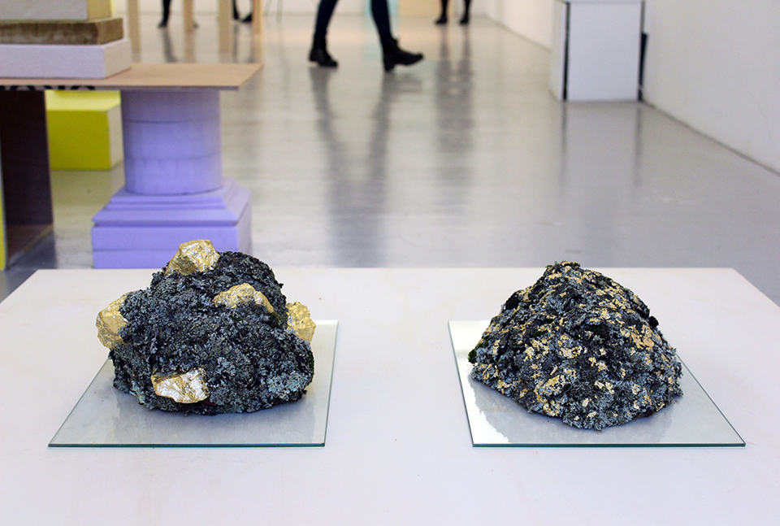

* Dancing walruss
* Dancing walrussTextiles, semolina, cotton, polyurethane foam

 * Tempête
* TempêteCrushed colored plaster, powder plaster, shaped plaster
 * Forme ramollie par Guillaume
* Forme ramollie par GuillaumeTextiles and polystyrene balls
 * Le temple sikh
* Le temple sikhCultivated lichen, gold foil and expansive foam

 * Bâton de sculpteur sur son linceul
* Bâton de sculpteur sur son linceulWood, gold foil, plasters, colored salts
 * Essai
* EssaiWood and stapled foam
Master degree exhibition views, EESAB Quimper
Ecole Européenne Supérieure d'Art de Bretagne, Quimper
June 2018
Coordination : Virginie Barré
Photographs : Clara Joly

 * Bâton de sculpteur à Kastel Koz
* Bâton de sculpteur à Kastel KozWood, gold foil, plaster / HD color photographs

* SymbioseWild lichen, gold foil, stones, soil, extruded polystyrene
EESAB Quimper
December 2015